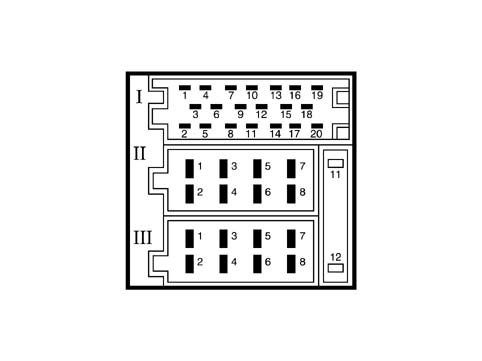
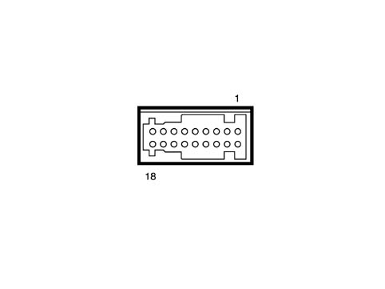
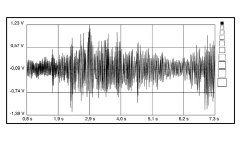
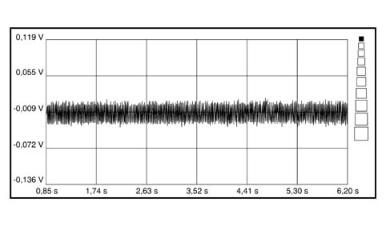
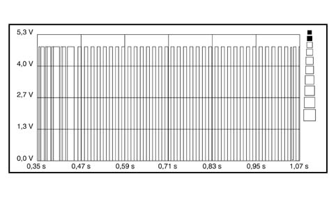

5570TH AUDIO SIGNALS CHECK BETWEEN CD-CHANGER AND CONNECT
- Path
- Test > 55 ELECTRICAL EQUIPMENT > 5570 ACCESSORIES > 5570T CAR RADIO AND CAR TELEPHONE > 5570TH AUDIO SIGNALS CHECK BETWEEN CD-CHANGER AND CONNECT
- Kind
- test / check procedure
- Applies to
- all engines; all production periods
- Interactive page
- https://sloeber94.github.io/elrnDB-fPnd/en/#/169001291
Applies to: all engines; all production periods
- Introduction: To carry out this check a music compact disc must be inserted in the cartridge (correctly positioned).
- The reproduction of master CDs may be difficult or impossible. Test with original or good quality master CDs. CDRs can be listened to whilst not with CD MP3s. If there is interference whilst playing CDs, check the screening of the audio connecting cable between the player and the Connect.
LEFT AND RIGHT AF OUTPUT SIGNALS FROM CD CHANGER CHECK
- After having selected a track on a music Compact Disc, place the black voltmeter probe at pin 18 of the 20-way Connect connector (I) and the red probe alternately at the Connect signal input cables (pin 20 - right AF signal and pin 19 left AF signal) [EL_3510].
- Select a 20V end of scale and 5 seconds on the Examiner (Voltmeter ambient).
- Press the Start button and take the reading: the values obtained should be similar to the ones in the diagram below.


Connect pin out

Audio signal from CD CHANGER
- If the signal is similar to the one shown in the diagram, this means that the CD Changer is sending the audio signals correctly. Continue with the check on the radio input signal.
- If this does not take place, check that the signal is not similar to the one shown in the diagram below.

No audio signals
- If the audio signals to the Connect radio are not present, check that the activation signal coming from the radio and the correct power supply are present at the CD Changer connector.
- If this is the case, continue checking the continuity and the insulation to earth of the following wiring:
- Connection between pin 13 of the CD Changer connector and pin 13 of the Connect 20-way connector (CDC BUS RxD)
- Connection between pin 14 of the CD Changer connector and pin 14 of the Connect 20-way connector (CDC BUS TxD)
- Connection between pin 17 of the CD Changer connector and pin 17 of the Connect 20-way connector (CDC BUS Gnd)
CHECK ON COMMUNICATION SERIAL LINE WITH CD CHANGER
- After having selected a track on a music Compact Disc, position the black voltmeter probe to earth and the red probe alternately at pin 13 and 14 of the Connect 20-way connector. [El_3510]
- Select a 20V end of scale and 5 seconds on the Examiner (Voltmeter ambient).
- Press the Start button and take the reading: the values obtained for both measurements should be similar to the ones in the diagram below.
